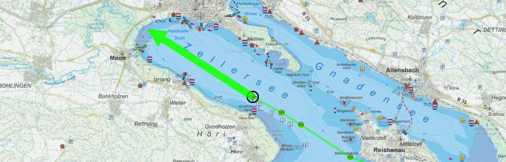

Welcome to SeaPal

SeaPal is an App for sailors and other water sport fanatics that support the skipper in his tasks for navigation, route planing and logbook keeping. The central view shows a map with the current position and forward line. Waypoint and routes can easily be created, distances and courses can quickly be determined and documented in the logbook. The touch interface allows for fast and intuitive interaction.
Online maps are available from Google and OpenSeaMap, allong with satellite view. With these a trip can easily be planed and documented. In navigation the offline operation and the precision and depth of detail is of special importance. Thats why digital sea maps for selected areas can be downloaded and used offline.
For the area of the Lake Constance excellent sea maps and local information (harbours, shipyards, shops, restaurants) provided by the IBN publishing house are available as extensions. Further areas are in preparation.
The application was developed particularly for the iPad in a cooperation between the IBN publishing house and the HTWG Constance University. The specific advantages of a mobile device and the touch interface were taken into account just as well as the special requirements of sailors and skippers. As a result of this cooperation, SeaPal is made available for free. Extensions and sea maps can be purchased and loaded according to your area and needs.
This cooperation is open to further extension. Should you be interested to develop or provide further extensions, please contact us.
The application runs on the iPad and with reduced functionality on the iPhone. An iPad with 3G or 4G and GPS is recommended. For longer use an external power source (like a USP port of a radio) is required.
Function Overview

SeaPal offers the following functionality
- Google Maps
- OpenSeaMaps
- Satellite view
- Follow position
- Position from GPS always visible in the map view
- Course and speed always visible in the map view
- Free navigation on the map with swipe and pinch
- Fast return to the current position
- Route planing, waypoints are editable
- Automatic waypoint switching
- Bearing and distance to any particular point with long-touch
- Placing of permanent marks on the map
- Add marks using bearing or coordinates
- Select any mark as target
- Bearing and distance to current target always visible in the map view
- Distance measurement, even across several waypoints
- "Person over Board" functionality
Extensions
With extensions SeaPal offers the following functionality:
- Logbook function for one or several boats
- Automatic tracking
- Automatic or manual logbook entries
- Fotos for logbook entries
- Collection of regional Points of Interest
Warning
SeaPal is a valuable addition to your navigational equipment, but no replacement. Always use official sea maps in conjunction. All positions are provided so that a transition to paper sea maps is simple. The responsibility for the proper use lies with the skipper. The manufacturer of SeaPal assume no liability.